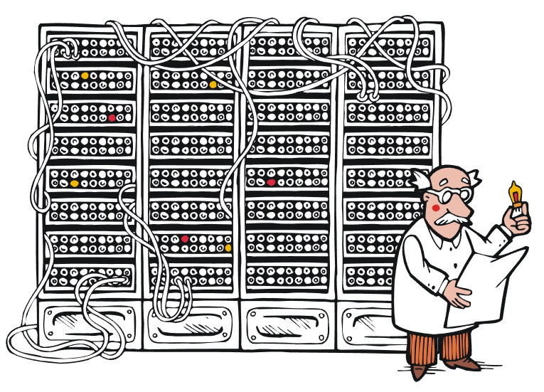

Margittai Neumann János (John von Neumann, született: Neumann János Lajos) (Budapest, Lipótváros, 1903. december 28. – Washington, 1957. február 8.) magyar születésű matematikus. Kvantummechanikai elméleti kutatásai mellett a digitális számítógép elvi alapjainak lefektetésével vált ismertté.
Édekességek Nemann Jánosról: János már korán kortársait jóval meghaladó képességekről tett tanúbizonyságot beszélt magyarul, németül, franciául, latinul, ógörögül kitűnően számolt fejben. Az elektronikus számítógépek logikai tervezésében kiemelkedő érdemeket szerzett Neumann-elvek: kettes számrendszer alkalmazása, memória, programtárolás, utasítás rendszer 1944 – EDVAC megépítése (az első olyan számítógép, amely a memóriában tárolja a programot is) együtt dolgozott: Kemény Jánossan, Szilárd Leóval, és Gróf Andrással (Andrew Grove). Budapesten és Székesfehérváron utcát, Budapesten főiskolai kart és szakközépiskolát, Egerben pedig gimnáziumot neveztek el róla a Financial Times 2000-ben a 20. század emberének nevezte őt.

Főbb Neumann-elvek:
- belső program- és adattárolás
- teljesen elektronikus számítógép
- kettes számrendszer alkalmazása
- központi vezérlőegység alkalmazása
„A munka oroszlánrészét akkor kell majd elvégezni, ha a gép már elkészült, és használható lesz. Ekkor magát a gépet kell majd kísérleti eszközként fölhasználni.”
- Neumann János